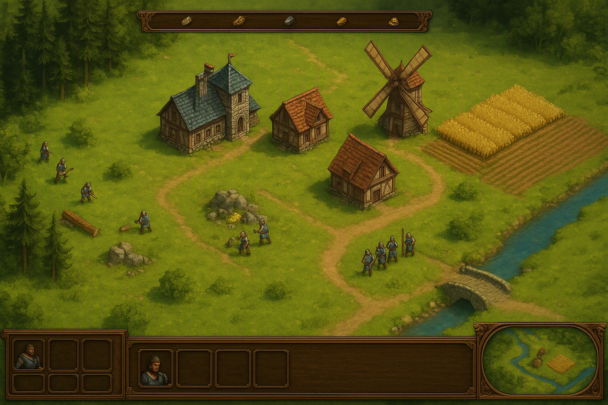
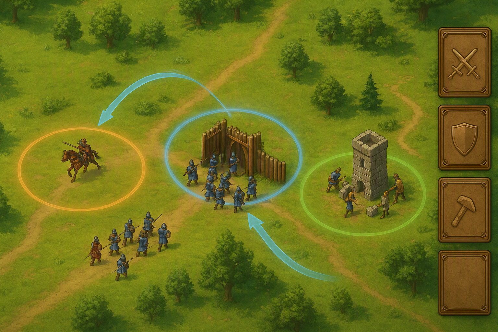
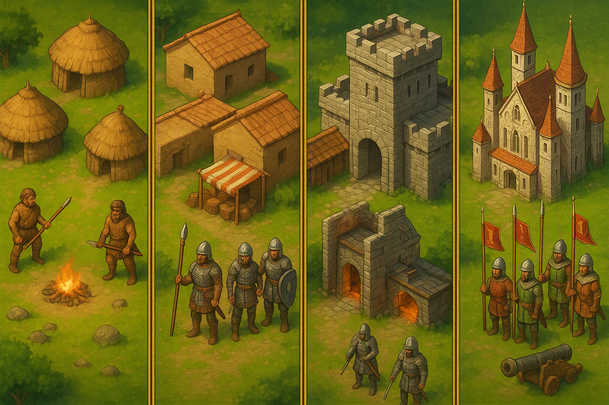
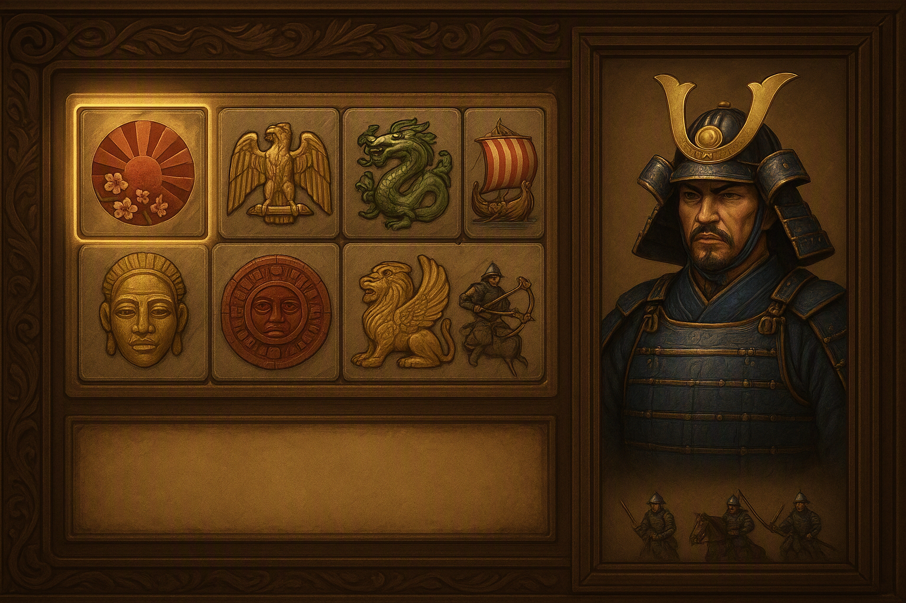
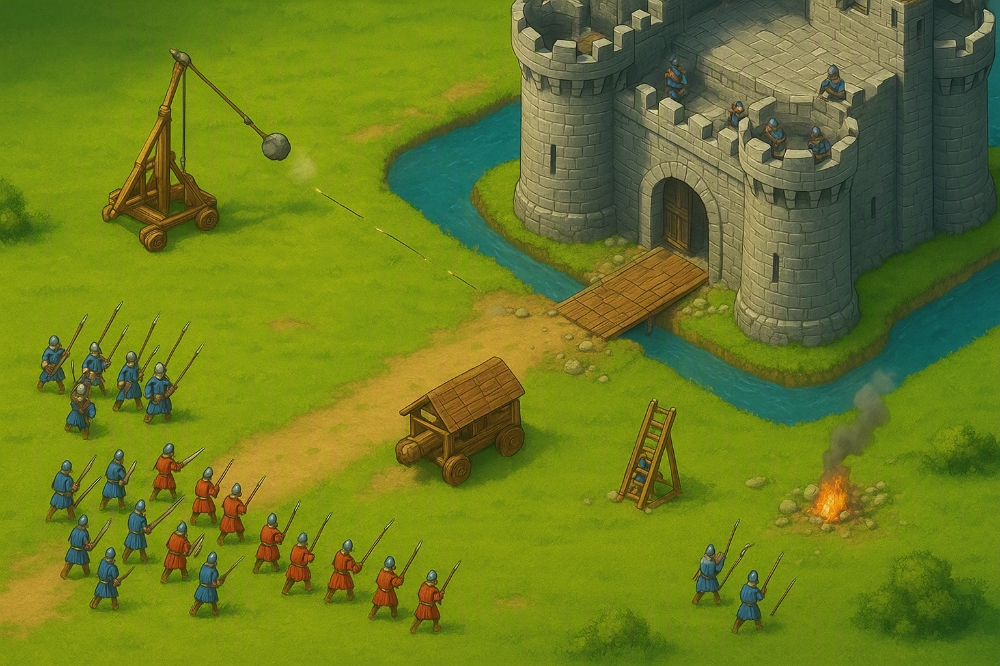

複数の戦線を、
同時に指揮する。
村ひとつから文明を育て、4 つの時代を駆け上がる ―― ここまでは、あなたが知っているストラテジーです。 Multi-Taktika が変えるのは「その先」。同時に走る 3 つ以上の戦線を、 指先の速さではなく 判断 で勝ち切るリアルタイムストラテジーです。

やることは 3 つだけ。集める・伸ばす・捌く。
01
食料・木材・石材・金の 4 資源。村人を配り、農地を広げ、伐採所と鉱山を伸ばす。 序盤 5 分の資源配分が、そのまま 20 分後の兵力差になります。
02
黎明の世から帝国の世まで 4 段階。進化すると建物の見た目・ユニット・戦術の選択肢が丸ごと入れ替わる。 「いつ進化を切るか」が最大の駆け引きです。
03
本作の中核。複数の戦線に 令（れい／作戦カード）を渡して半自動で走らせ、 あなたは勝負所だけに手を入れる。全戦線を見ながら戦う、新しい操作感。
「右で押されている。でも左の攻めも止めたくない。」
従来の RTS がプレイヤーに手の速さで解かせてきたこの問題を、Multi-Taktika は仕組みで解きます。

戦闘が起きている場所は自動的に「戦域」としてマーキングされます。 戦域は同時に最大 6 つまで発生し、それぞれが独立した小さな戦場として進行します。
各戦域にカードを 1 枚セットすると、その戦域の部隊はカードの方針に従って自律的に動きます。 セットしたまま放置してもきちんと戦い、負け始めれば警告が飛んできます。
全戦域を俯瞰し、どの戦域を捨て、どの戦域に増援を送るかを決める。 クリック数ではなく、その判断だけで勝敗が決まる設計です。
操作が苦手な人でも複数戦線を扱えて、上手い人はカードの切り替えと直接操作を混ぜてさらに伸ばせる ―― 腕前の差が「疲労」ではなく「思考」に出るようにしたい、というのが設計の狙いです。
| 令（キー順） | 部隊の挙動 | 使いどころ |
|---|---|---|
| 突撃 | 最も近い敵に向かって前進し続ける | 数で押し切れると読んだとき |
| 包囲 | 攻城兵器を前に出し、歩兵で護衛する | 城・塔を落としたいとき |
| 死守 | 指定地点から離れず、迎撃に専念する | 時間を稼いで進化を通したいとき |
| 略奪 | 敵の村人と資源施設を優先して狙う | 相手の内政を折りたいとき |
| 建設 | 村人が防壁・塔を前線に建て進める | 戦線を押し上げて固定したいとき |
| 後退 | 損害を避けつつ最寄りの拠点まで下がる | 捨てる戦域を決めたとき |
進化は数値の底上げではありません。村の見た目が変わり、戦い方そのものが変わります。 石斧の狩人で始まった集落が、最後は大砲を備えた城塞都市になる ―― その 30 分を 1 試合に凝縮しました。

| 時代 | 村の姿 | 主力ユニット | この時代のテーマ |
|---|---|---|---|
| 黎明の世 | 茅葺きの小屋と焚き火 | 棍棒兵・狩人 | 探索と土地取り。まず食料。 |
| 青銅の世 | 日干し煉瓦の家と市場 | 青銅槍兵・投石兵 | 初めての衝突。戦域が 1 つ立つ。 |
| 鉄器の世 | 石造りの砦と鍛冶場 | 剣士・騎兵・弓兵 | 戦線が複数に割れる。カード運用の本番。 |
| 帝国の世 | 城・大聖堂・軍旗 | 長槍兵・大砲・攻城兵器 | 総力戦。攻城戦で決着をつける。 |
文明は見た目替えではありません。固有ユニット・内政ボーナス・固有の令が 3 点セットで付き、 「この文明ならこう勝つ」がはっきり分かれます。

固有カードは戦域指令のスロットに追加され、他文明には真似できない戦線運用ができます。 例えばモンゴルの「遊撃」は、戦域を固定せず動き回る運用そのものを可能にします。
| 文明 | 固有ユニット | 内政ボーナス | 固有の令 |
|---|---|---|---|
| ヤマト | 武士 | 農地の食料収集が速い | 陣立て：防御隊形で被害を軽減 |
| ローマ | レギオン | 街道が建設コスト半減 | 方陣：損耗しても隊列が崩れない |
| 唐 | 連弩兵 | 技術研究が安い | 火計：建物へのダメージが増える |
| ヴァイキング | ベルセルク | 船と伐採が強化 | 上陸：水辺の戦域に強襲をかける |
| マリ | 近衛弓兵 | 金の採掘量が多い | 交易：戦域を維持すると金が入る |
| アステカ | ジャガー戦士 | 村人の建設が速い | 奉納：撃破数が資源に変わる |
| ペルシア | 戦象 | 開始資源が多い | 圧壊：正面の敵陣を押し崩す |
| モンゴル | 弓騎兵 | 騎兵の生産が速い | 遊撃：戦域を跨いで移動し続ける |

城は「体力の多い建物」ではありません。攻め方を要求してくる地形です。
だからこそ「囮の戦域」が効きます。反対側に 略奪 カードを刺して守備兵を引き剥がし、 本命の門前を 包囲 で押し切る ―― これが戦域指令の一番気持ちいい瞬間です。
全 4 章・各 5 ミッション。ひとつの文明の興亡を追いながら、戦域指令の使い方が自然に身につく構成です。 負けても分岐して先に進めます。
マップ・文明・AI の強さを選んで単発対戦。AI は 5 段階。上位はプレイヤーと同じく戦域指令で戦い、最上位は固有令と二重旗まで使ってきます。
1 対 1 から 4 対 4 まで、最大 8 人。URL を共有するだけで参加でき、アカウント登録は不要です。
全戦域の指令履歴が残ります。「どこで判断を間違えたか」を戦域単位で振り返れます。
| プラットフォーム | PC ブラウザ（Chrome / Edge / Safari / Firefox）。インストール・追加プラグイン不要。 |
|---|---|
| 描画 | 斜め見下ろしの 2D。レトロなドット絵ではなく、手描きの高解像度スプライトを滑らかに描画する方針（HTML5 Canvas 2D の自前レンダラ）。 |
| 実装 | TypeScript + Vite。ゲームロジックは決定論的に実装し、リプレイと対戦同期を同じ仕組みで扱う。 |
| 通信 | WebSocket によるロックステップ同期。入力だけを送るため通信量は小さい。 |
| 要求スペック | 統合 GPU のノート PC でも 描画 60fps を目標（ゲームロジックは 25fps で進め、描画側で補間）。3D を使わないぶん、ユニット数を稼ぐ方針。 |
| 操作 | マウス中心。戦域の切り替えはキーボード 1 〜 6、令を渡すのは Shift + 1 〜 6。俯瞰は Tab。 |
※ 掲載している画面イメージはコンセプトを示すためのもので、実装中の画面とは異なります。